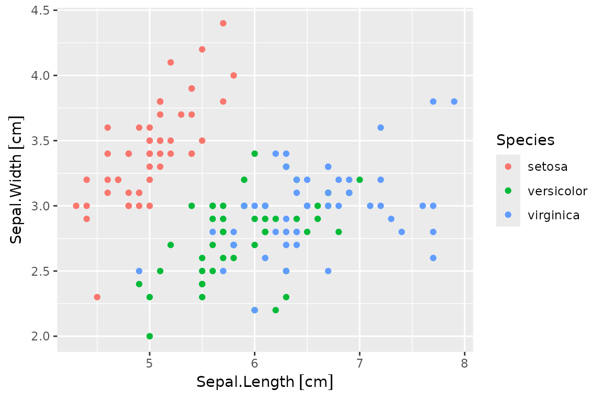

A Guide to Working with Quantities
Iñaki Ucar
2024-07-29
Source:vignettes/introduction.Rmd
introduction.RmdIntroduction
This document intends to be a guide on how to work with quantities data (magnitudes with units and/or uncertainty) in two distinct workflows: R base and the so-called tidyverse. Units and errors (and, by extension, quantities) objects essentially are numeric vectors, arrays and matrices with associated metadata. This metadata is not always compatible with some functions, and thus we here explore the most common operations in data wrangling (subsetting, ordering, transformations, aggregations…) to identify potential issues and propose possible workarounds.
Let us consider the traditional iris data set for this
exercise. According to its documentation,
irisis a data frame with 150 cases (rows) and 5 variables (columns) namedSepal.Length,Sepal.Width,Petal.Length,Petal.Width, andSpecies.
And values are provided in centimeters. If we consider, for instance, a 2% of uncertainty, the first step is to define proper quantities. Then we will work on the resulting data frame for the rest of this article.
library(quantities)
#> Loading required package: units
#> udunits database from /usr/share/xml/udunits/udunits2.xml
#> Loading required package: errors
iris.q <- iris
for (i in 1:4)
quantities(iris.q[,i]) <- list("cm", iris.q[,i] * 0.02)
head(iris.q)
#> Sepal.Length Sepal.Width Petal.Length Petal.Width Species
#> 1 5.1(1) [cm] 3.50(7) [cm] 1.40(3) [cm] 0.200(4) [cm] setosa
#> 2 4.9(1) [cm] 3.00(6) [cm] 1.40(3) [cm] 0.200(4) [cm] setosa
#> 3 4.70(9) [cm] 3.20(6) [cm] 1.30(3) [cm] 0.200(4) [cm] setosa
#> 4 4.60(9) [cm] 3.10(6) [cm] 1.50(3) [cm] 0.200(4) [cm] setosa
#> 5 5.0(1) [cm] 3.60(7) [cm] 1.40(3) [cm] 0.200(4) [cm] setosa
#> 6 5.4(1) [cm] 3.90(8) [cm] 1.70(3) [cm] 0.400(8) [cm] setosaNote that, throughout this document, and unless otherwise stated, we will talk about quantities objects as a shortcut for quantities, units and errors objects.
R Base
In this section, we consider all the methods and functions included in the default packages, i.e., those that are automatically installed along with any R distribution:
rownames(installed.packages(priority="base"))#> [1] "base" "compiler" "datasets" "graphics" "grDevices" "grid"
#> [7] "methods" "parallel" "splines" "stats" "stats4" "tcltk"
#> [13] "tools" "utils"Row Subsetting
Quantities objects have all the subsetting methods defined
([, [[, [<-,
[[<-). Therefore they can be used in the same way as
with plain numeric vectors, and in conjunction with which
and other functions to perform subsetting. The subset
function is very handy too and achieves the same result:
iris.q[which(iris.q$Sepal.Length > set_quantities(75, mm)), ]
#> Warning: In '>' : boolean operators not defined for 'errors' objects,
#> uncertainty dropped
#> Sepal.Length Sepal.Width Petal.Length Petal.Width Species
#> 106 7.6(2) [cm] 3.00(6) [cm] 6.6(1) [cm] 2.10(4) [cm] virginica
#> 118 7.7(2) [cm] 3.80(8) [cm] 6.7(1) [cm] 2.20(4) [cm] virginica
#> 119 7.7(2) [cm] 2.60(5) [cm] 6.9(1) [cm] 2.30(5) [cm] virginica
#> 123 7.7(2) [cm] 2.80(6) [cm] 6.7(1) [cm] 2.00(4) [cm] virginica
#> 132 7.9(2) [cm] 3.80(8) [cm] 6.4(1) [cm] 2.00(4) [cm] virginica
#> 136 7.7(2) [cm] 3.00(6) [cm] 6.1(1) [cm] 2.30(5) [cm] virginica
subset(iris.q, Sepal.Length > set_quantities(75, mm))
#> Sepal.Length Sepal.Width Petal.Length Petal.Width Species
#> 106 7.6(2) [cm] 3.00(6) [cm] 6.6(1) [cm] 2.10(4) [cm] virginica
#> 118 7.7(2) [cm] 3.80(8) [cm] 6.7(1) [cm] 2.20(4) [cm] virginica
#> 119 7.7(2) [cm] 2.60(5) [cm] 6.9(1) [cm] 2.30(5) [cm] virginica
#> 123 7.7(2) [cm] 2.80(6) [cm] 6.7(1) [cm] 2.00(4) [cm] virginica
#> 132 7.9(2) [cm] 3.80(8) [cm] 6.4(1) [cm] 2.00(4) [cm] virginica
#> 136 7.7(2) [cm] 3.00(6) [cm] 6.1(1) [cm] 2.30(5) [cm] virginicaNote that another quantities object is defined for the comparison.
This is needed because different units are incomparable. Also note that
the first line throws a warning telling us that the uncertainty was
dropped for this operation. This kind of warning is thrown once, and
this is why subset succeeds silently.
Row Ordering
The sort function, as its name suggests, sorts
vectors, and it is compatible with quantities:
iris.q$Sepal.Length[1:5]
#> Units: [cm]
#> Errors: 0.102 0.098 0.094 0.092 0.100
#> [1] 5.1 4.9 4.7 4.6 5.0
sort(iris.q$Sepal.Length[1:5])
#> Units: [cm]
#> Errors: 0.092 0.094 0.098 0.100 0.102
#> [1] 4.6 4.7 4.9 5.0 5.1More generally, the order function can be used for data
frame ordering:
head(iris.q[order(iris.q$Sepal.Length), ])
#> Sepal.Length Sepal.Width Petal.Length Petal.Width Species
#> 14 4.30(9) [cm] 3.00(6) [cm] 1.10(2) [cm] 0.100(2) [cm] setosa
#> 9 4.40(9) [cm] 2.90(6) [cm] 1.40(3) [cm] 0.200(4) [cm] setosa
#> 39 4.40(9) [cm] 3.00(6) [cm] 1.30(3) [cm] 0.200(4) [cm] setosa
#> 43 4.40(9) [cm] 3.20(6) [cm] 1.30(3) [cm] 0.200(4) [cm] setosa
#> 42 4.50(9) [cm] 2.30(5) [cm] 1.30(3) [cm] 0.300(6) [cm] setosa
#> 4 4.60(9) [cm] 3.10(6) [cm] 1.50(3) [cm] 0.200(4) [cm] setosaColumn Transformation
The transform function is able to modify variables in a
data frame or to create new ones. The within function
provides a similar but more flexible approach though. Both are fully
compatible with quantities:
head(within(iris.q, {
Sepal.Area <- Sepal.Length * Sepal.Width
Petal.Area <- Petal.Length * Petal.Width
rm(Sepal.Length, Sepal.Width, Petal.Length, Petal.Width)
}))
#> Species Petal.Area Sepal.Area
#> 1 setosa 0.280(8) [cm^2] 17.8(5) [cm^2]
#> 2 setosa 0.280(8) [cm^2] 14.7(4) [cm^2]
#> 3 setosa 0.260(7) [cm^2] 15.0(4) [cm^2]
#> 4 setosa 0.300(8) [cm^2] 14.3(4) [cm^2]
#> 5 setosa 0.280(8) [cm^2] 18.0(5) [cm^2]
#> 6 setosa 0.68(2) [cm^2] 21.1(6) [cm^2]Row Aggregation
Row aggregation is the process of summarising data based on some grouping variable(s). There are several ways of working with data split by factors in R base, and, although they tend to preserve classes, they are generally not very kind to other metadata (i.e., attributes) by default.
In the following example, the average Sepal.Length is
computed per Species, but the metadata gets dropped:
tapply(iris.q$Sepal.Length, iris.q$Species, mean)
#> setosa versicolor virginica
#> 5.006 5.936 6.588Many of these functions include a simplify parameter
which, if set to FALSE, preserves quantities metadata:
(sepal.length.agg <-
tapply(iris.q$Sepal.Length, iris.q$Species, mean, simplify=FALSE))
#> $setosa
#> 5.0(1) [cm]
#>
#> $versicolor
#> 5.9(1) [cm]
#>
#> $virginica
#> 6.6(1) [cm]The only drawback is that the result is a list, and such a list must be unlisted with care, otherwise, metadata gets dropped again:
# drops quantities
unlist(sepal.length.agg)
#> setosa versicolor virginica
#> 5.006 5.936 6.588
# preserves quantities
do.call(c, sepal.length.agg)
#> Units: [cm]
#> Errors: 0.10012 0.11872 0.13176
#> setosa versicolor virginica
#> 5.006 5.936 6.588The by function is an object-oriented wrapper for
tapply applied to data frames which also provides a
simplify parameter. A more convenient way of working with
summary statistics is the aggregate generic, from the
stats namespace. Although there is a
aggregate.data.frame method, there is a more intuitive
interface to it through the aggregate.formula method.
Again, it is necessary to set simplify=FALSE to keep
quantities:
(iris.q.agg <- aggregate(. ~ Species, data = iris.q, mean, simplify=FALSE))
#> Species Sepal.Length Sepal.Width Petal.Length Petal.Width
#> 1 setosa 5.006 3.428 1.462 0.246
#> 2 versicolor 5.936 2.77 4.26 1.326
#> 3 virginica 6.588 2.974 5.552 2.026Apparently, the output has no metadata associated, but what really happens is that the resulting columns are lists:
class(iris.q.agg$Sepal.Length)
#> [1] "list"Therefore, as in the tapply/by case, they
must be unlisted with care to still preserve the metadata:
unlist_quantities <- function(x) {
stopifnot(is.list(x) || is.data.frame(x))
unlist <- function(x) {
if (any(class(x[[1]]) %in% c("quantities", "units", "errors")))
do.call(c, x)
else x
}
if (is.data.frame(x))
as.data.frame(lapply(x, unlist), col.names=colnames(x))
else unlist(x)
}
unlist_quantities(iris.q.agg)
#> Species Sepal.Length Sepal.Width Petal.Length Petal.Width
#> 1 setosa 5.0(1) [cm] 3.43(7) [cm] 1.46(3) [cm] 0.25(1) [cm]
#> 2 versicolor 5.9(1) [cm] 2.77(6) [cm] 4.26(9) [cm] 1.33(3) [cm]
#> 3 virginica 6.6(1) [cm] 2.97(6) [cm] 5.6(1) [cm] 2.03(4) [cm]And this method works for the tapply/by
case too:
unlist_quantities(sepal.length.agg)
#> Units: [cm]
#> Errors: 0.10012 0.11872 0.13176
#> setosa versicolor virginica
#> 5.006 5.936 6.588Column Joining
Joining data frames by common columns can done with the
merge generic. Such operations are based on appending
columns, which may be subset or replicated to fit the length of the
merged observations. Therefore, quantities should be preserved in all
cases. In the following example, we generate a data frame with the
height per species and then merge it with the main data set:
height <- data.frame(
Height = set_quantities(c(55, 60, 45), cm, c(45, 30, 35)),
Species = c("setosa", "virginica", "versicolor")
)
head(merge(iris.q, height))
#> Species Sepal.Length Sepal.Width Petal.Length Petal.Width Height
#> 1 setosa 5.1(1) [cm] 3.50(7) [cm] 1.40(3) [cm] 0.200(4) [cm] 60(40) [cm]
#> 2 setosa 4.9(1) [cm] 3.00(6) [cm] 1.40(3) [cm] 0.200(4) [cm] 60(40) [cm]
#> 3 setosa 4.70(9) [cm] 3.20(6) [cm] 1.30(3) [cm] 0.200(4) [cm] 60(40) [cm]
#> 4 setosa 4.60(9) [cm] 3.10(6) [cm] 1.50(3) [cm] 0.200(4) [cm] 60(40) [cm]
#> 5 setosa 5.0(1) [cm] 3.60(7) [cm] 1.40(3) [cm] 0.200(4) [cm] 60(40) [cm]
#> 6 setosa 5.4(1) [cm] 3.90(8) [cm] 1.70(3) [cm] 0.400(8) [cm] 60(40) [cm](Un)Pivoting
The reshape function, from the stats
namespace, provides an interface for both pivoting and unpivoting (i.e.,
tidyfying data). In the case of the iris data set,
we would say that it is in the wide format, because each row
has more than one observation.
This function has a quite peculiar nomenclature. First of all, the
unpivoting operation is accessed by providing the argument
direction="long". We need to define the
varying columns (columns to unpivot), as character or
indices, and they are unpivoted based on their names. By default, the
separator sep="." is used, which means that
Sepal.Width will be broken down into Sepal and
Width, and the former will be unpivoted with the latter as
grouping variable. We can specify the name of the grouping variable with
the timevar argument.
Putting everything together, this is how to unpivot the data set by
the dimension (which we will call it dim) of the
petal/sepal:
long.1 <- reshape(iris.q, varying=1:4, timevar="dim", idvar="dim.id", direction="long")
head(long.1)
#> Species dim Sepal Petal dim.id
#> 1.Length setosa Length 5.1(1) [cm] 1.40(3) [cm] 1
#> 2.Length setosa Length 4.9(1) [cm] 1.40(3) [cm] 2
#> 3.Length setosa Length 4.70(9) [cm] 1.30(3) [cm] 3
#> 4.Length setosa Length 4.60(9) [cm] 1.50(3) [cm] 4
#> 5.Length setosa Length 5.0(1) [cm] 1.40(3) [cm] 5
#> 6.Length setosa Length 5.4(1) [cm] 1.70(3) [cm] 6It can be noted that the unpivoting also generates an index to
indentify multiple records from the same group. We have changed the name
of that identifier to dim.id (just id by
default).
We can further unpivot sepal and petal as the part of
the flower. First, we need to prepend a common identifier to columns 3
and 4, which are to be unpivoted:
names(long.1)[3:4] <- paste0("value.", names(long.1)[3:4])
long.2 <- reshape(long.1, varying=3:4, timevar="part", idvar="part.id", direction="long")
head(long.2)
#> Species dim dim.id part value part.id
#> 1.Sepal setosa Length 1 Sepal 5.1(1) [cm] 1
#> 2.Sepal setosa Length 2 Sepal 4.9(1) [cm] 2
#> 3.Sepal setosa Length 3 Sepal 4.70(9) [cm] 3
#> 4.Sepal setosa Length 4 Sepal 4.60(9) [cm] 4
#> 5.Sepal setosa Length 5 Sepal 5.0(1) [cm] 5
#> 6.Sepal setosa Length 6 Sepal 5.4(1) [cm] 6And the final result has one tidy observation per row.
The pivoting operation can be accessed by providing the argument
direction="wide". The process is almost symmetrical, but we
need to specify v.names, as character, instead of
varying columns. First, we can pivot by flower part:
wide.1 <- reshape(long.2, v.names="value", timevar="part", idvar="part.id", direction="wide")
head(wide.1)
#> Species dim dim.id part.id value.Sepal value.Petal
#> 1.Sepal setosa Length 1 1 5.1(1) [cm] 1.40(3) [cm]
#> 2.Sepal setosa Length 2 2 4.9(1) [cm] 1.40(3) [cm]
#> 3.Sepal setosa Length 3 3 4.70(9) [cm] 1.30(3) [cm]
#> 4.Sepal setosa Length 4 4 4.60(9) [cm] 1.50(3) [cm]
#> 5.Sepal setosa Length 5 5 5.0(1) [cm] 1.40(3) [cm]
#> 6.Sepal setosa Length 6 6 5.4(1) [cm] 1.70(3) [cm]Then, we remove "value." from the column names and pivot
by dimension (note that indices are removed to match the initial data
frame):
names(wide.1)[5:6] <- sub("value\\.", "", names(wide.1)[5:6])
wide.2 <- reshape(wide.1, v.names=c("Sepal", "Petal"), timevar="dim", idvar="dim.id", direction="wide")
#> Warning in reshapeWide(data, idvar = idvar, timevar = timevar, varying =
#> varying, : some constant variables (part.id) are really varying
wide.2$dim.id <- NULL
wide.2$part.id <- NULL
head(wide.2)
#> Species Sepal.Length Petal.Length Sepal.Width Petal.Width
#> 1.Sepal setosa 5.1(1) [cm] 1.40(3) [cm] 3.50(7) [cm] 0.200(4) [cm]
#> 2.Sepal setosa 4.9(1) [cm] 1.40(3) [cm] 3.00(6) [cm] 0.200(4) [cm]
#> 3.Sepal setosa 4.70(9) [cm] 1.30(3) [cm] 3.20(6) [cm] 0.200(4) [cm]
#> 4.Sepal setosa 4.60(9) [cm] 1.50(3) [cm] 3.10(6) [cm] 0.200(4) [cm]
#> 5.Sepal setosa 5.0(1) [cm] 1.40(3) [cm] 3.60(7) [cm] 0.200(4) [cm]
#> 6.Sepal setosa 5.4(1) [cm] 1.70(3) [cm] 3.90(8) [cm] 0.400(8) [cm]We have seen that quantities have been correctly preserved through the whole process. Finally, we can check whether both data frames are identical. Given that the order of columns have changed, we can simply check this column name by column name and then put everything together:
Plotting
Quantities support R base scatterplots out of the box: errors are displayed as segments around each point and units are automatically added to the corresponding axis label.
Here is an example of a simple plot of a single quantity, where each value is automatically indexed in the x-axis:
X-Y scatterplots support units and errors in both axes:
# x-y plots
with(iris.q, plot(Sepal.Length, Sepal.Width, col=Species))
# dataframe plots
plot(iris.q[, c("Sepal.Length", "Sepal.Width")], col=iris.q$Species)which are equivalent, and produce the same result, as the formula method:
plot(Sepal.Width ~ Sepal.Length, iris.q, col=Species)There is a fundamental limitation in R base for mixed quantities and non-quantities data due to S3 dispatch. It is possible, for instance, to plot quantities in the x-axis and numeric data in the y-axis:
plot(as.numeric(Sepal.Width) ~ Sepal.Length, iris.q, col=Species)However, when the x-axis has numeric data, quantities methods will not be dispatched for the y-axis:
plot(Sepal.Width ~ as.numeric(Sepal.Length), iris.q, col=Species)One way to overcome this limitation is to set unitless and errorless quantities in the x-axis:
plot(Sepal.Width ~ set_quantities(as.numeric(Sepal.Length), 1, 0), iris.q, col=Species)Tidyverse
The core
tidyverse includes the following packages:
ggplot2, dplyr, tidyr,
readr, purrr, tibble,
stringr and forcats. This section covers use
cases for dplyr
(everything except for pivoting and unpivoting), tidyr (for pivoting
and unpivoting) and ggplot2 (for plotting).
library(dplyr); packageVersion("dplyr")
#> [1] '1.1.4'
library(tidyr); packageVersion("tidyr")
#> [1] '1.3.1'Although not strictly necessary, we will convert the data frame to
tibble format to enjoy the formatting provided by
pillar.
iris.q <- as_tibble(iris.q)
head(iris.q)
#> # A tibble: 6 × 5
#> Sepal.Length Sepal.Width Petal.Length Petal.Width Species
#> (err) [cm] (err) [cm] (err) [cm] (err) [cm] <fct>
#> 1 5.1(1) 3.50(7) 1.40(3) 0.200(4) setosa
#> 2 4.9(1) 3.00(6) 1.40(3) 0.200(4) setosa
#> 3 4.70(9) 3.20(6) 1.30(3) 0.200(4) setosa
#> 4 4.60(9) 3.10(6) 1.50(3) 0.200(4) setosa
#> 5 5.0(1) 3.60(7) 1.40(3) 0.200(4) setosa
#> 6 5.4(1) 3.90(8) 1.70(3) 0.400(8) setosaSince dplyr 1.0.0, as we will see, there is enhanced
support for custom S3 classes thanks to the new implementation based on
vctrs >= 0.3.0. Packages units >= 0.6-7,
errors >= 0.3.4 and quantities >= 0.1.5
add support for this approach.
Row Subsetting
The filter generic finds observations where conditions
hold. The main difference with base subsetting is that, if a condition
evaluates to NA for a certain row, it is dropped. As in the
base case, another quantities object must be defined for the
comparison:
iris.q %>%
filter(Sepal.Length > set_quantities(75, mm)) %>%
head()
#> # A tibble: 6 × 5
#> Sepal.Length Sepal.Width Petal.Length Petal.Width Species
#> (err) [cm] (err) [cm] (err) [cm] (err) [cm] <fct>
#> 1 7.6(2) 3.00(6) 6.6(1) 2.10(4) virginica
#> 2 7.7(2) 3.80(8) 6.7(1) 2.20(4) virginica
#> 3 7.7(2) 2.60(5) 6.9(1) 2.30(5) virginica
#> 4 7.7(2) 2.80(6) 6.7(1) 2.00(4) virginica
#> 5 7.9(2) 3.80(8) 6.4(1) 2.00(4) virginica
#> 6 7.7(2) 3.00(6) 6.1(1) 2.30(5) virginicaThere are also three scoped variants available
(filter_all, filter_if,
filter_at) and a subsetting function by row number called
slice. All of them preserve quantities.
Row Ordering
The arrange generic sorts variables in a straightforward
way, and it is compatible with quantities:
iris.q %>%
arrange(Sepal.Length) %>%
head()
#> # A tibble: 6 × 5
#> Sepal.Length Sepal.Width Petal.Length Petal.Width Species
#> (err) [cm] (err) [cm] (err) [cm] (err) [cm] <fct>
#> 1 4.30(9) 3.00(6) 1.10(2) 0.100(2) setosa
#> 2 4.40(9) 2.90(6) 1.40(3) 0.200(4) setosa
#> 3 4.40(9) 3.00(6) 1.30(3) 0.200(4) setosa
#> 4 4.40(9) 3.20(6) 1.30(3) 0.200(4) setosa
#> 5 4.50(9) 2.30(5) 1.30(3) 0.300(6) setosa
#> 6 4.60(9) 3.10(6) 1.50(3) 0.200(4) setosaThe desc function can be applied to individual variables
to arrange in descending order.
Column Transformation
There are two generics for column transformations:
mutate modifies or adds new variables preserving the
existing ones, while transmute drops the existing
variables. The syntax is very similar to base functions
transform and within, and equally compatible
with quantities:
iris.q %>%
transmute(
Species = Species,
Petal.Area = Petal.Length * Petal.Width,
Sepal.Area = Sepal.Length * Sepal.Width
) %>%
head()
#> # A tibble: 6 × 3
#> Species Petal.Area Sepal.Area
#> <fct> (err) [cm^2] (err) [cm^2]
#> 1 setosa 0.280(8) 17.8(5)
#> 2 setosa 0.280(8) 14.7(4)
#> 3 setosa 0.260(7) 15.0(4)
#> 4 setosa 0.300(8) 14.3(4)
#> 5 setosa 0.280(8) 18.0(5)
#> 6 setosa 0.68(2) 21.1(6)Row Aggregation
dplyr breaks down aggregation operations in two distinct
parts: grouping (with group_by) and summarising (using
summarise and others). Since dplyr >=
1.0.0, operations on aggregated data is now fully compatible with
quantities and,compared to base methods, no fancy unlisting is
required:
iris.q %>%
group_by(Species) %>%
summarise_all(mean)
#> # A tibble: 3 × 5
#> Species Sepal.Length Sepal.Width Petal.Length Petal.Width
#> <fct> (err) [cm] (err) [cm] (err) [cm] (err) [cm]
#> 1 setosa 5.0(1) 3.43(7) 1.46(3) 0.25(1)
#> 2 versicolor 5.9(1) 2.77(6) 4.26(9) 1.33(3)
#> 3 virginica 6.6(1) 2.97(6) 5.6(1) 2.03(4)Column Joining
Several verbs are provided for different types of joins, such as
inner_join, left_join, right_join
or full_join. Internally, they use the same grouping
mechanism than summaries. Therefore, since dplyr >=
1.0.0, these are fully compatible with quantities too:
iris.q %>%
left_join(data.frame(
Height = set_quantities(c(55, 60, 45), cm, c(45, 30, 35)),
Species = c("setosa", "virginica", "versicolor")
)) %>%
head()
#> Joining with `by = join_by(Species)`
#> # A tibble: 6 × 6
#> Sepal.Length Sepal.Width Petal.Length Petal.Width Species Height
#> (err) [cm] (err) [cm] (err) [cm] (err) [cm] <chr> (err) [cm]
#> 1 5.1(1) 3.50(7) 1.40(3) 0.200(4) setosa 60(40)
#> 2 4.9(1) 3.00(6) 1.40(3) 0.200(4) setosa 60(40)
#> 3 4.70(9) 3.20(6) 1.30(3) 0.200(4) setosa 60(40)
#> 4 4.60(9) 3.10(6) 1.50(3) 0.200(4) setosa 60(40)
#> 5 5.0(1) 3.60(7) 1.40(3) 0.200(4) setosa 60(40)
#> 6 5.4(1) 3.90(8) 1.70(3) 0.400(8) setosa 60(40)The only difference with base merge here is that
dplyr does not reorder columns with respect to the
left-hand side.
(Un)Pivoting
Finally, pivoting and unpivoting is handled by a separate package,
tidyr. Historically, this was managed using the verbs
spread (pivot) and gather (unpivot). These
verbs, which are not compatible with quantities, are deprecated and no
longer maintained.
Instead, there are new and more straightforward verbs for
(un)pivoting data frames called pivot_wider (equivalent to
spread) and pivot_longer (equivalent to
gather). These verbs do make use of the new approach
brought by vctrs and therefore are fully compatible with
quantities.
Compared to base R, the unpivoting operation is substantially more
straightforward. In the next example, we directly merge the four columns
of interest into the value column, and the correspoding
column names are gathered into the name column. Such a
column is then separated into flower part (sepal, petal)
and dim (length, height):
iris.q %>%
pivot_longer(1:4) %>%
separate(name, c("part", "dim")) %>%
head()
#> # A tibble: 6 × 4
#> Species part dim value
#> <fct> <chr> <chr> (err) [cm]
#> 1 setosa Sepal Length 5.1(1)
#> 2 setosa Sepal Width 3.50(7)
#> 3 setosa Petal Length 1.40(3)
#> 4 setosa Petal Width 0.200(4)
#> 5 setosa Sepal Length 4.9(1)
#> 6 setosa Sepal Width 3.00(6)In the following example, we first unpivot the original data set,
then we assign quantities and try to pivot it to obtain
iris.q back, and it just works:
iris %>%
# first gather, with row numbers as row_id
mutate(row_id = 1:n()) %>%
pivot_longer(1:4) %>%
# assign quantities
mutate(value = set_quantities(value, cm, value * 0.05)) %>%
# now spread and remove the row_id
pivot_wider() %>%
select(-row_id) %>%
head()
#> # A tibble: 6 × 5
#> Species Sepal.Length Sepal.Width Petal.Length Petal.Width
#> <fct> (err) [cm] (err) [cm] (err) [cm] (err) [cm]
#> 1 setosa 5.1(3) 3.5(2) 1.40(7) 0.20(1)
#> 2 setosa 4.9(2) 3.0(1) 1.40(7) 0.20(1)
#> 3 setosa 4.7(2) 3.2(2) 1.30(6) 0.20(1)
#> 4 setosa 4.6(2) 3.1(2) 1.50(7) 0.20(1)
#> 5 setosa 5.0(2) 3.6(2) 1.40(7) 0.20(1)
#> 6 setosa 5.4(3) 3.9(2) 1.70(8) 0.40(2)Plotting
library(ggplot2); packageVersion("ggplot2")
#> [1] '3.5.1'Quantities packages provide ggplot2 elements to make
scatterplots straightforward:
-
unitsprovides automatic detection of units scale type, with optional conversion and customization viascale_x_units()andscale_y_units(). -
errorsprovides automatic placement of errorbars viageom_errors(). -
quantitiesprovides a compatibility layer between them, so that conversions fromscale_[x|y]_unitsaffect errorbars too.
By default, units are automatically placed in the axes:
p0 <- ggplot(iris.q) + aes(Sepal.Length, Sepal.Width, color=Species) +
geom_point()
p0
#> Warning: The `scale_name` argument of `continuous_scale()` is deprecated as of ggplot2
#> 3.5.0.
#> This warning is displayed once every 8 hours.
#> Call `lifecycle::last_lifecycle_warnings()` to see where this warning was
#> generated.
And errobars can be requested via geom_errors():
p0 + geom_errors()Errors may be dropped from any axis:
p0 + geom_errors(aes(x=drop_errors(Sepal.Length)))And units can be converted for display:
p0 + geom_errors() + scale_x_units(unit="mm") + scale_y_units(unit="m")Summary
R base works smoothly with quantities in most cases. The only
shortcoming is that some care must be applied to aggregations. In
particular, simplification must be explicitly disabled
(simplify=FALSE), and such a simplification (i.e.,
converting lists to vectors of quantities) must be applied manually
while avoiding unlist.
Since dplyr 1.0.0 and tidyr 1.1.0 (for
units >= 0.6-7, errors >= 0.3.4 and
quantities >= 0.1.5), the new vctrs-based
approach brings us full compatibility with quantities for all the
operations considered in this document, including grouped operations,
joining and pivoting, which did not work for previous versions.
Both R base and ggplot2 plots work out of the box,
although the latter provides much more flexibility and can be used
independently of the tidyverse.
A Note on data.table
The data.table
package is another popular data tools, which provides a
high-performance version of base R’s data.frame with syntax
and feature enhancements for ease of use, convenience and programming
speed.
Long story short, we have not included a section on
data.table because currently (v1.11.4) it does not
work well with vectorised attributes. The underlying problem is similar
to dplyr’s issue, but unfortunately it affects more
operations, including row subsetting and ordering. Only column
transformation seems to work, and other operations generate corrupted
objects.
We have found that defining quantities columns as lists (where each element consists of a single value, with unit and uncertainty) may be a workaround, but this probably would be a serious performance penalty for a package that is typically chosen for speed reasons.